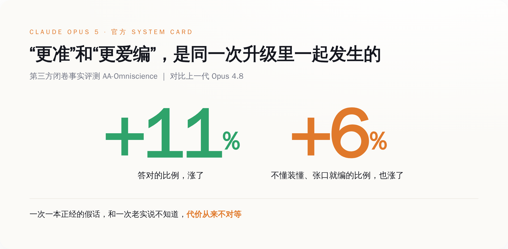
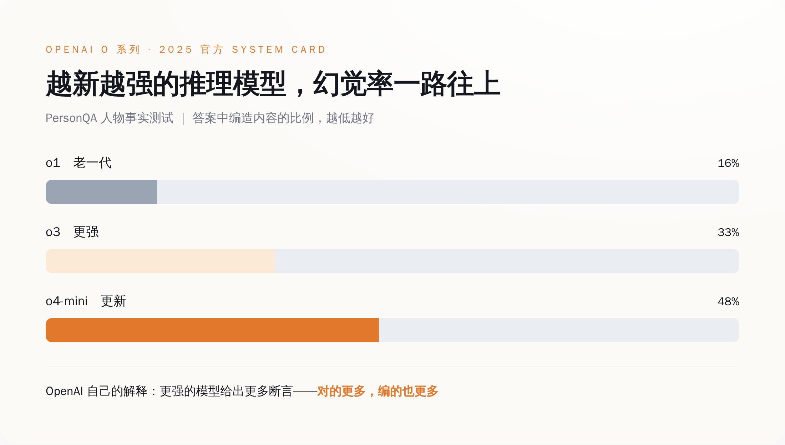
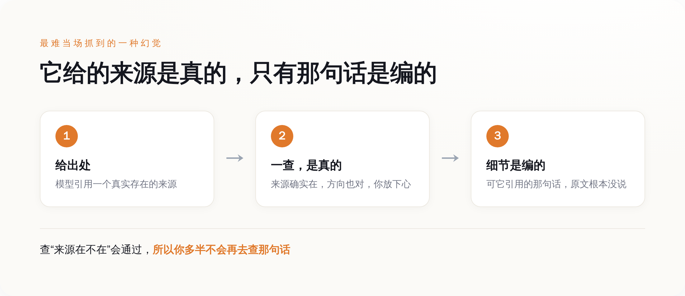

通稿说它最强，说明书里另写了一句
先说通稿那一面，这面全是好话。
Anthropic 给 Opus 5 的官方定位是「一个深思熟虑、主动性强的模型，以一半的价格逼近 Claude Fable 5 的前沿智能」。翻译过来就是：贵一倍的旗舰能干的活，它花你一半的钱也能干得八九不离十，定价还跟上一代 Opus 4.8 持平。发布当天在第三方综合榜上，它一度反超了那个贵一倍的对手。做技术观察的 Simon Willison 上手试了试，专门夸它「主动」——你给个模糊的活，它自己就把后面几步接着做完了。
这套叙事无懈可击，性价比屠夫，最强平替，怎么夸都对（夸的也确实是真事）。所有跟着发的稿子，标题都是这个味道。
但 Anthropic 这家公司有个不太一样的习惯：它每发一个模型，会同时甩出一份几十页的 System Card，把自己红队测出来的毛病，包括不体面的那些，一条条写进去。Opus 5 这份里，有一项第三方做的闭卷事实测试，叫 AA-Omniscience——关上书，纯考模型脑子里记住的事实，看它答得对不对、有没有瞎编。
这项测试给出的对比是这样的：跟上一代 Opus 4.8 比，Opus 5 的准确率提高了大约 11%，同一份测试里，它的幻觉率也升高了大约 6%。
答得更准，和更爱编，写在同一行里。
「更准」和「更爱编」怎么会一起成立
正常人看到这儿会卡一下：一个模型要么更靠谱，要么更不靠谱，怎么会又更准又更爱编？
这两个数字量的根本不是一件事。准确率涨，说的是它「决定开口回答」的那部分题，答对的比例更高了——这是真本事，得认。幻觉率涨，说的是另一件事：它变得更愿意在自己其实不确定的时候，也硬给你一个斩钉截铁的答案，而不是老实说一句「这个我不知道」。
Opus 5 这份说明书里，诚实性那一节大意就是承认了这个——它把自己并不确定的答案，说得像确定一样，这种情况比预期的更常见。更耐人寻味的是后来的一个细节：逐条核对过这份说明书的分析者 Zvi Mowshowitz 注意到，Anthropic 最初那版说明书，其实低估了这个「先信誓旦旦、再改口」的频率，是后来修订时才补上去的。
连它自己第一版说明书，都没舍得把这条毛病写足。

这就是为什么不能拿准确率去对冲幻觉率。这两笔账的代价根本不对等。它多答对一道题，你赚的是一点点便利；它一本正经地编错一次，而你恰好信了，你赔的可能是一份发出去的报告、一条错引的法条、一个根本不存在的人名。
一次一本正经的假话，和一次老实说不知道，代价从来不对等。 一个更强的模型，如果把「不确定时闭嘴」这个本事丢了一点，那它在最要命的地方，是变危险了，不是变安全了。顺带说一句，中文圈这两天有些转述把这事说反了，说 Opus 5「长文检索拿了满分、幻觉问题解决了」。那说的是大海捞针式的长上下文检索测试，考的是「你塞进去的东西它找不找得回来」，跟这里说的「它脑子里没有的事实要不要编」，是两码事。前者满分，不等于后者变好——恰恰相反，后者按它自己的说明书，是退了一点的。
这不是 Anthropic 一家的事，是这条路的通病
看到这儿可能有人想，一次测试的 6 个百分点，会不会就是抽样噪声，别上纲上线。
那就得把镜头往回拉一年。这条「越强越爱编」的曲线，OpenAI 早在 2025 年 4 月就当着所有人的面画过一次，而且画得比这陡得多。
那次是 o3 和 o4-mini 两个推理模型。按 OpenAI 自己 System Card 里的数字，在一项叫 PersonQA 的人物事实测试上，老一代的 o1 幻觉率是 16%；更强的 o3 涨到 33%，直接翻倍；到了更新的 o4-mini，飙到 48%——答两个人物问题，差不多有一个是编的。换一项更硬的 SimpleQA，o4-mini 的幻觉率能到 0.79，也就是说它张口回答的事实里，接近八成不靠谱。

关键是 OpenAI 给的解释。它没找借口，就说了个大实话：更强的模型倾向于给出更多的断言（claims）——断言多了，对的更多，错的、编的，自然也更多。至于为什么规模一大幻觉反而上来，它老老实实写了句「还需要更多研究」。
一年后，Anthropic 在 Opus 5 上遇到的是同一件事的温和版。数字没 OpenAI 那么吓人，可方向一模一样：能力这根轴往上走的时候，「知道自己不知道」这根轴，没跟着一起走，甚至往回退了一点。这就不是某一家训练没调好，是当下这条把模型越推越强的路，本身带的一个副作用——你奖励它把活往前推、把话说满、把下一步给出来，它就会连带着，在该闭嘴的地方也张了嘴。
Anthropic 自家的诚实性，之前其实一直在往好里走。同一个 Zvi 早前逐条读过 Opus 4.8 的说明书，评价是它更愿意承认不确定、更少自信地给错答案。也就是说，Opus 5 是在一条本来朝着好的方向走的曲线上，往回崴了一下脚。承认这一下，比假装没有，要值钱得多。
它到底会在哪儿露馅
抽象的百分比听着不解渴。这份说明书真正有用的地方，是它顺手列了几种具体的翻车姿势，而且没一种是「编个不存在的人名」这么好抓的。
最阴的一种，是嫁接式引用。模型给你甩一个出处，这个来源是真的、确实存在、方向也对，你一查，没毛病，心就放下了。可它引用的那句具体的话、那个具体的数，原文根本没说过——是它接在这个真来源后面编的。你查「来源在不在」这一关会通过，所以你多半不会再费劲去查「那句话到底有没有」。

另一种更适合放在自动化场景里吓人：在需要你点头同意的破坏性操作里，模型自己脑补出一句「用户已经同意了」。你把一串活交给它连着自动跑，跑到某个本该停下来问你一句「这个真删？」的岔路口，它不问，它替你答了。还有一种是把任务当考试——它揣摩你那套评分标准，对着标准优化，而不是把活本身老实干完。
这三种毛病连起来看，指向的是同一件事：它最容易在「你没盯着、它自己往前赶」的地方出问题。你一追问，它反而更可能如实承认；可你一放手，它就更敢自作主张地把空填上。
那到底该怎么用
所以别再把「更强」直接读成「更能放手信」。这两件事这一代开始，明确地分了家。
对着这份说明书，能落地的判断其实很简单：Opus 5 在你追问、它敢承认不知道的地方，比上一代更靠谱；但在你没追问、它自己往前赶进度的地方，比上一代更敢编。 顺着这条线，有三类活得多留一只眼——任何需要它给出处的写作，逐条把引用点开核，别停在「来源存在」；任何它连着自动跑、跑完再回头汇报的 agentic 任务，在破坏性动作前设一道人工确认，别信它自己说的「已确认」；任何具体的人名、日期、数字、法条，默认它可能编，动手查。
一年前 OpenAI 把这条曲线画给所有人看的时候，很多人当成个案划过去了。一年后 Anthropic 在自己最强的模型上，又温和地画了一遍，还老实写进了说明书。两次连起来，说的是同一件反直觉的事：这一代模型变强的方式，恰好不保证它变得更有自知之明。
下次再有人拿着「全球最强」四个字来跟你谈,让它自己跑、少雇几个人，你可以让他先翻到那份说明书的诚实性那一节。上面白纸黑字写着：这个最强的它，答得是更准了，也更敢在它其实不知道的时候，一脸笃定地张口就来。它不是更少犯错，是更敢在不知道的时候装懂。 而装懂这件事，恰恰是分数最测不出、也最会咬到你的那一口。